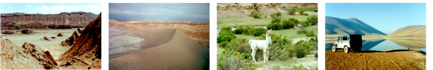

Dia 01
Chá de estrada
05:55 0000 Saída de Curitiba 06:30 0022 Abastecimento 08:05 0136 São Mateus do Sul 10:45 0309 Usina eólica de Palmas 11:15 0344 Abastecimento 12:20 0421 Pato Branco 14:20 0525 Abastecimento 14:30 0529 Aduana Dionísio Cerqueira burocracia, revista no carro, [30min] Divisa BRASIL/ARGENTINA 16:40 0641 Eldorado 17:40 0714 Puerto Rico 18:20 0745 Abastecimento 20:30 0841 Posadas (paraguai II) ??:?? ???? Pedágio us$3,30
Dia 02
Dia lazarento: chaco, propina, carteira perdida
05:40 0841 Saída de Posadas 05:45 0842 Abastecimento 06:50 0??? Pedágio us$3,80 07:40 1000 ----- 1 0 0 0 k m 09:20 1135 Corrientes (propina) 09:40 1147 Abastecimento 10:00 1??? Pedágio us$1,70 10:20 1??? Polícia mocada = propina 11:00 1??? Pedágio us$3,00 13:00 1321 Abastecimento 14:50 1400 Pampa del Infierno (nome massa) 15:50 1460 Polícia posto policial = propina 16:00 1466 Abastecimento 17:50 1618 Abastecimento 19:20 1725 Joaquín V. González 20:20 1??? Ponte+buraco+curva = marcha desengatada 22:25 1887 Pedágio = carteira perdida = voltar 23:?? 2000 ----- 2 0 0 0 k m 23:50 20?? Abastecimento 01:10 20?? Posto de gasolina em El Galpon
Dia 03
Salta-Cobres, o deserto dá as caras
07:40 20?? Saída do posto de gasolina 08:45 2040 Achamos a carteira! 10:05 2148 Pedágio us$2,70 11:05 2200 Salta 15:25 2206 Saída de Salta 15:35 2207 Abastecimento 20:40 2??? Santo Antonio de los Cobres (meio do nada)
Dia 04
Um dia em Santo Antonio de los Cobres
Dia 05
Cruzando os andes e entrando no Chile
09:00 2396 Saída de Santo Antonio de los Cobres 09:30 2409 Estrada interrompida [1h] 11:00 2422 Estrada a 4560m de altitude! 13:15 2514 Aduana Paso de Sico burocracia [30min] 13:55 2526 Divisa ARGENTINA/CHILE 16:15 2550 Aduana Paso de Laguna Sico burocracia, inspeção sanitária [30min] 18:35 2547 Início do asfalto 20:00 2732 San Pedro de Atacama (o paraíso)
Dia 06
Vale da Lua
Dia 07
Xaxixada no escapamento e lasanha
09:25 2779 Saída de San Pedro de Atacama
13:20 2??? 2ª Saída de San Pedro de Atacama
15:00 2??? Calama
15:05 2??? Abastecimento
17:00 2960 Chiu Chiu
Dia 08
A farsa dos gêisers
05:10 2986 Saída de Chiu Chiu
06:30 3000 ----- 3 0 0 0 k m
07:30 3077 El Tatio (gêisers)
12:45 3167 Retorno a San Pedro de Atacama
Dia 09
Adeus paraíso, olá problemas
12:20 3169 Saída de San Pedro de Atacama
14:00 3264 Calama
14:05 3266 Abastecimento
Dia 10
"Geoglifos" e o Oceano Pacífico
11:20 3268 Saída de Calama
12:45 3307 Chuquicamata (mina de cobre)
13:15 3339 Parque Chug Chug (geoglifos)
15:00 3415 Abastecimento
15:01 3416 Maria Helena (cidade corporativa)
18:00 3565 Trópico de Capricórnio
18:40 3608 Antofagasta (porto)
19:40 3677 Mejillones (porto)
Dia 11
Pingüins e pelicanos no açúcar
08:00 3677 Saída de Mejillones
Abastecimento
11:50 3962 Abastecimento
12:30 4000 ----- 4 0 0 0 k m
13:05 4034 Tal Tal
15:15 4042 Saída de Tal Tal
16:40 4155 Pan de Azucar (parque)
Dia 12
A pegadinha da solenóide
09:25 4155 Saída de Pan de Azucar 09:55 4??? Abastecimento 11:40 4??? Bahia Inglesa 13:30 4??? Abastecimento 13:55 4382 Copiapó (palm springs) 19:50 4402 Saída de Copiapó 22:00 4539 Vallenar
Dia 13
Mais um chá de estrada
10:05 4539 Saída de Vallenar
4717 Abastecimento
4734 La Serena
17:10 4796 Pedágio us$3,00
19:46 4970 Abastecimento
20:30 4977 Los Vilos
Dia 14
Caminho de Santiago
11:10 4977 Saída de Los Vilos 11:50 5000 ----- 5 0 0 0 k m 5047 Saída da Ruta 5 para Papudo 15:00 5167 Viña del Mar (praia) 15:40 5182 Abastecimento 17:00 5218 Costa Zapata, dribla o Pedágio 17:25 5230 Saída da Costa Zapata 18:00 5275 Santiago (concreto)
Dia 15, 16 e 17
Descansando na casa do Macuco
Dia 18
Cruzando os andes novamente
07:45 5339 Saída de Las Condes 09:10 5362 Abastecimento 10:00 5428 Los Andes 10:25 5433 Ruta 60 para Argentina 11:40 5490 Aduana Portillo burocracia, taxas [30min] Pedágio us$4,00 12:25 5498 Túnel cristo redentor Divisa CHILE/ARGENTINA 12:35 5512 Parque Aconcágua (lagoa, montanha) 14:10 5515 Aduana argentina ??? (nome da cidade) burocracia [20min] 16:20 5620 Polícia blitz: revista no carro 17:25 5688 Abastecimento 17:45 5711 Mendoza
Dia 19
Pedágios argentinos malditos, parte I
08:15 5711 Saída de Mendoza 10:15 5851 Pedágio us$2,60 La Paz 10:45 5882 Polícia registro 12:15 5983 Pedágio us$2,60 12:25 6000 ----- 6 0 0 0 k m 6??? Pedágio us$2,90 6146 Abastecimento 18:00 6335 Desvio da Ruta 7 [35km] 18:30 6379 Abastecimento 19:45 6471 Pedágio us$3,10 21:25 6494 Junin
Dia 20
Pedágios argentinos malditos, parte II
08:30 6507 Saída de Junin
Abastecimento
11:05 6672 Pedágio us$3,30
11:25 6700 Pedágio us$1,50
11:48 6730 Pedágio us$1,50
6748 Pedágio us$2,00
6753 Abastecimento
13:10 6789 Pedágio us$1,50
13:49 6837 Pedágio us$4,80
15:25 6961 Abastecimento
15:30 6963 Saída da Ruta 14
16:30 7000 ----- 7 0 0 0 k m
16:35 7006 Ponte sobre o Rio Uruguai
Divisa ARGENTINA/URUGUAI
16:37 7008 Aduana ??? (nome cidade)
burocracia [20min]
19:00 7083 Dolores (motonetas)
Dia 21
A tranqüilidade uruguaia
10:30 7083 Saída de Dolores 13:00 7??? Colonia del Sacramento (passear) 15:30 7230 Abastecimento 18:30 7412 Montevidéu (calma) 19:05 7441 Pedágio us$3,91 19:35 7451 Atlântida (praia)
Dia 22
Passeio pela costa uruguaia
10:10 7451 Saída de Atlântida 10:15 7452 Abastecimento 11:35 7487 Pedágio us$3,90 12:35 7538 Punta Ballena 15:45 7600 Balsa grátis :) ???(nome lago) 16:20 7628 Ruta 9 16:40 7648 Abastecimento 16:42 7649 Ruta 15 17:05 7675 Ruta 10 18:00 7733 Ruta 16 19:00 7764 La Esmeralda (praia)
Dia 23
Brasil! Brasil! Que saudades!
10:15 7764 Saída de La Esmeralda 10:55 7797 Punta del Diablo 11:30 7833 Aduana Chuy passa direto, sem checagens :( Divisa URUGUAI/BRASIL 11:45 7837 Abastecimento 12:30 7851 Ponta do Chuí (o sul do sul) 14:45 8000 ----- 8 0 0 0 k m 16:25 8079 Abastecimento 18:45 8161 Pelotas (espeto corrido!)
Dia 24
Correndo de volta pra casa
07:40 8161 Saída de Pelotas 10:00 8345 Abastecimento 10:30 8377 Pedágio r$3,00 10:50 8404 Porto Alegre (ao longe) 11:05 8423 Pedágio r$1,30 11:45 8467 Pedágio r$2,60 13:30 8542 Abastecimento 15:35 8615 Torres (marrom) 20:10 8906 Abastecimento 22:14 9000 ----- 9 0 0 0 k m 23:59 9??? Na estrada, em direção à Curitiba
Dia 25
Em casa
00:01 9??? Na estrada, em direção à Curitiba 01:35 9110 Chegada em CASA! Massa. Fim.